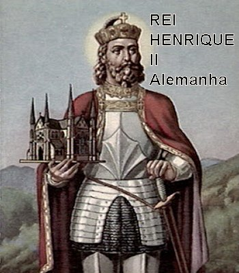
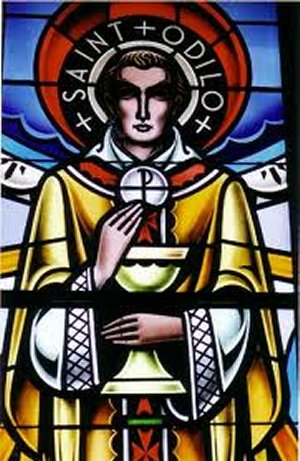
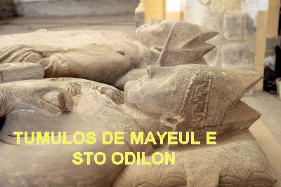

“DIA DAS
ALMAS”

O GRANDE REI HENRIQUE II
Na Alemanha, a política de Cluny
não teve um sucesso permanente, pois os Monges estavam mais inclinados ao
individualismo. Odilon visitou o Rei Henrique II em várias ocasiões e, pelo
fato de existir uma grande amizade entre eles, conseguiu a interseção dele para
resolver disputas em várias ocasiões com pessoas na Alemanha. Quando Henrique II
foi coroado Rei da Itália em 1004, Odilon estava presente e participou da cerimônia.
No dia seguinte, houve uma revolta contra o Rei Henrique em Pavia, que foi
rapidamente esmagada e o partido derrotado foi procurar Odilon, suplicando que
ele conseguisse a misericórdia do Rei Henrique para os derrotados. Odilon concordou
e conseguiu convencer Henrique, que muito respeitava a santidade do seu amigo
Odilon, que sempre segurava e levantava a sua mão nas vitórias e concedia
misericórdia aos vencidos. Quando Henrique foi coroado como Sacro Imperador
Romano em Roma, em 1014, o Abade Odilon também estava presente. Ele chegou a
Roma antes do Natal e passou vários meses junto com Henrique até sua coroação em
fevereiro de 1014. O Papa presenteou Henrique com uma maçã dourada ('o mundo')
com uma cruz, representando o seu Império. Mais tarde, o Rei Henrique II enviou
esse presente para Odilon em Cluny. Quando Henrique II morreu em 1024, as casas de Cluny fizeram muitas orações e Missas pela alma do Rei Henrique II.
FINADOS
Segundo uma lenda, um peregrino
que viajava numa pequena embarcação, foi arremessado ao mar durante uma tempestade,
e com dificuldade conseguiu se abrigar numa ilha. Sendo homem muito religioso,
enquanto aguardava socorro, ficou rezando e suplicando a misericórdia de DEUS.
Então teve uma visão das almas no Purgatório, suportando a dor da purificação pelas
chamas que as queimavam, como punição pelos seus pecados. Salvo por marinheiros
de outra embarcação, retornando a sua casa, foi procurar o Padre Odilon de Cluny,
e lhe perguntou: “Se havia um
dia no ano, especialmente destinado para as pessoas rezar em beneficio das almas dos
falecidos que padeciam no Purgatório”?
 Odilon pensou no acontecimento
e decidiu instituir a comemoração anual dos mortos, de todos os fiéis que partiram
desta vida, a serem observados pelos membros da sua comunidade com esmolas,
orações e sacrifícios, suplicando ao SENHOR DEUS o alívio das almas que sofrem
no Purgatório. Com este objetivo, Santo Odilon decretou que aqueles que
solicitavam uma Missa para os mortos deveriam também fazer uma oferta monetária
para os pobres, associando assim a esmola em beneficio dos pobres e mais
necessitados, às orações em benefícios das almas das pessoas falecidas.
Odilon pensou no acontecimento
e decidiu instituir a comemoração anual dos mortos, de todos os fiéis que partiram
desta vida, a serem observados pelos membros da sua comunidade com esmolas,
orações e sacrifícios, suplicando ao SENHOR DEUS o alívio das almas que sofrem
no Purgatório. Com este objetivo, Santo Odilon decretou que aqueles que
solicitavam uma Missa para os mortos deveriam também fazer uma oferta monetária
para os pobres, associando assim a esmola em beneficio dos pobres e mais
necessitados, às orações em benefícios das almas das pessoas falecidas.
Assim, ele criou o
“Dia de Todas as Almas”
(DIA DE FINADOS) em Cluny e nos seus Mosteiros, dia
2 de Novembro, provavelmente não no ano 998 como afirmam alguns autores, mas no
ano 1030, quando esta providência foi aprovada e adotada em toda a Igreja
Católica Ocidental.
O Livro dos Macabeus, na Sagrada
Escritura, confirma: "De
fato, se ele não esperasse que os falecidos iriam ressuscitar, seria supérfluo e tolo
rezar pelos mortos. Mas, se ele considerava que uma belíssima recompensa está reservada
para os que adormecem na piedade, então era santo e piedoso o seu modo de pensar. Eis
por que ele mandou oferecer esse sacrifício expiatório (Santa Missa) pelos
que haviam morrido, a fim de que fossem absolvidos dos seus pecados".
(2 Macabeus 12,44-46).
O acolhimento e
respeito pela data, logo se espalhou rapidamente por todo o universo cristão. O
Papa Bento XV concedeu um privilégio aos Sacerdotes do mundo inteiro, de poder
celebrar três Santas Missas no dia 2 de novembro, ou seja, no Dia de Finados, com
objetivo de multiplicar as orações pela libertação das almas do Purgatório. Sobretudo,
porque a Santa Missa é a renovação do sacrifício de CRISTO na Cruz, atraindo para todas
as famílias, inclusive as enlutadas, os infinitos frutos da redenção.
SANTA TEREZINHA DO MENINO JESUS
nas oportunidades gostava de esclarecer: “A morte não é o termo, o final de tudo. Não é assim. Através da morte entramos
na vida".
No entanto, esta entrada no Céu
pode não ser imediata para a maioria das pessoas. Para uma normal e completa união
íntima com DEUS, a alma precisa estar perfeitamente limpa, purificada de todos os seus
pecados durante a existência terrestre, e por isso, os remanescentes dos pecados cometidos
que não foram removidos totalmente em vida, pelas Confissões Sacramentais não realizadas
com perfeição, pelas Orações e Santas Missas rezadas sem a necessária fé, pelo recebimento
da Sagrada Eucaristia em imperfeito estado de graça, e de muitas outras faltas e comportamentos
indignos, as pessoas devem procurar corrigir em vida. Assim sendo, as almas dos falecidos
que não
estão purificadas integralmente, terão que ser encaminhadas ao Purgatório, para ficarem totalmente
limpas e em perfeitas condições de encontrar DEUS. O Apóstolo São Mateus reproduz nos
evangelhos a palavra de JESUS:"Bem-aventurados os puro
de coração, porque verão DEUS" (Mt 5,8).
Portanto, a experiência da
oração do povo cristão pelos mortos, expressa essa persuasão da necessidade de
uma purificação. Fato que levou as autoridades eclesiásticas no Vaticano a definir
o dogma do Purgatório [conforme DS 1304; 1820; 1580], como uma purificação final
que permite aos eleitos obter a santidade necessária para entrar na alegria do Céu,
alcançando a visão beatífica de DEUS [cf. CEC n.1032].
MORTE
Muitas vezes em sua vida, Odilon
visitou Roma. Em sua última visita, em Outubro de 1048, na época das eleições
papais e da coroação imperial do Rei Henrique III, ele passava o tempo todo
orando em diferentes Igrejas e dando esmolas aos pobres. Na verdade, ele sempre
pensava e desejava morrer em Roma. Mas seguiu sua vida normalmente. Concluídos
todos os compromissos começou sua jornada de volta a Cluny. No caminho, ainda
não muitão longe de Roma, sofreu um acidente com seu cavalo que tropeçou em
algumas pedras e ele caiu, tendo-se machucado bastante, inclusive merecendo
cuidados especiais por motivo de sua avançada idade. Foi levado de volta à
cidade eterna. E tanto ele estava sofrendo, que até o Papa foi visitá-lo em seu
leito de dores, confortando-o e rezando por suas melhoras. Permaneceu em Roma
até a Páscoa. Depois completamente curado do acidente, retornou a Cluny.
Todavia, na Abadia e durante as
suas viagens de visitas as Casas Clunicenses, continuou a fazer os seus jejuns
e práticas ascéticas, apesar da sua idade avançada e da fraqueza do corpo. Mas,
quando visitou o Convento de Souvigny ainda exercendo normalmente as suas
funções, teve que permanecer lá. No Natal, ele estava tão fraco que precisou
ser carregado pelas dependências do Mosteiro. E assim, ele morreu durante a madrugada
do Ano Novo, no dia 1º de Janeiro de 1049, aos oitenta e sete anos de
idade. Entregou sua alma a DEUS sem qualquer estremecimento e sem agonia. Os Monges
presentes descrevem que ele fechou os olhos normalmente, como fazia para dormir,
e com a face tranquila e serena, sua alma partiu para a eternidade.

CANONIZAÇÃO
O Abade Odilon foi enterrado no Convento
Clunicense de Souvigny, e logo após o seu sepultamento, milagres foram relatados, inclusive
com curas de pessoas, e por isso mesmo, passou a ser venerado como Santo. Em 1063, o
Cardial Peter Damien, Bispo de Óstia, iniciou o processo de Canonização por determinação do Papa Alexandre II
(1061-1073), escrevendo um resumo dos fatos mais importantes da vida de Odilon, baseado
na obra completa escrita pelo Monge Jotsald, que foi o acompanhante do Abade Odilon em
todas as viagens. O valor e a santidade inquestionável do Abade ficou em plena evidência,
inclusive foi denominado "Arcanjo dos Monges", por suas admiráveis reformas
administrativas. Em 1069 por determinação do Papa, foi aberto o tumulo do Abade Odilon
e encontraram o corpo integralmente incorrupto. Então, o Sumo Pontífice
concluindo a parte das verificações determinou o final do processo,
proclamando SANTO, o Abade Odilon. O seu corpo foi transladado para
a Abadia de Cluny, permanecendo num tumulo ao lado do Abade Mayeul.
REVOLUÇÃO FRANCESA
Em 1793, suas relíquias, juntamente com
as do Abade Mayeul, foram queimadas por revolucionários franceses no "altar da pátria".
No ano de 2002/03, as relíquias que permaneceram
dos dois Abades, foram tratadas e colocadas em novos mausoléus.
REGISTRO OFICIAL
A festa de Santo Odilon era
anteriormente no dia 2 de Janeiro, em Cluny, agora é comemorada no dia 19 de Janeiro
na França; na Suíça é comemorada no dia 6 de Fevereiro. Em outros lugares, é
comemorada no dia 11 de Maio. Santo Odilon é patrono das almas do Purgatório. A
Paróquia de Saint Odilon em Berwyn, Illinois, nos Estados Unidos da América do
Norte, foi oficialmente designada como "O Santuário Nacional das Almas do Purgatório".

 PRÓXIMA
PÁGINA
PRÓXIMA
PÁGINA
PÁGINA
ANTERIOR
RETORNA
AO ÍNDICE